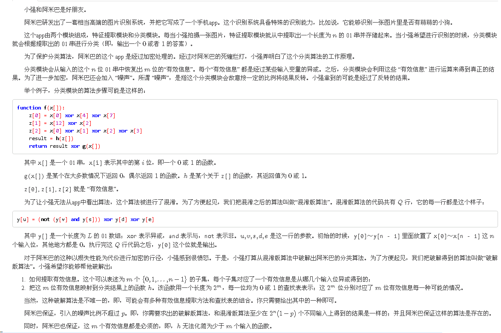
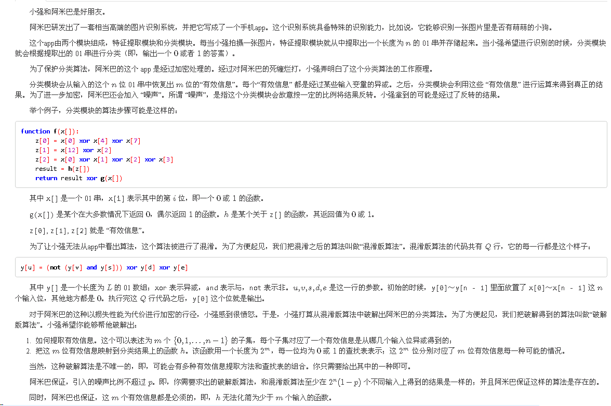

3 2 4 1
0 1 2 2 2
001
010
1110样例输入等价于如下代码
y[] = 0000 input x[0..n-1] y[0..n-1] = x[0..n-1] y[0] = (not (y[1] and y[2])) xor y[2] xor y[2] output y[0]
其中 x[0..n-1] 表示 01 串 x 的第 0 位到第 n−1 位。
在这段代码中，每一种输入对应的输出如下：
input 000 001 010 011 100 101 110 111
output 1 1 1 0 1 1 1 0
样例输出是一种破解方案，等价于如下代码：
input x[0..n-1] z[0] = x[2] z[1] = x[1] output h(z[])
h 函数的输入和输出有如下对应关系：
z[] 00 01 10 11
h(z[]) 1 1 1 0
可以发现，对于每一种输入，破解版算法和混淆版算法的输出是相同的。
对于所有的数据，1≤n≤64，1≤L≤256，1≤Q≤1024，0≤p≤0.01，0≤u,v,s,d,e<L（注意，输入中并没有把 p 的值给你）。
提示
使用位运算一次在多个输入上求出函数值可以极大的加速你的程序。
数据范围
1<=N<=64,1<=L<=256,1<=Q<=1024,0<=P<=0.01,0<=U,V,S,D,E<=L